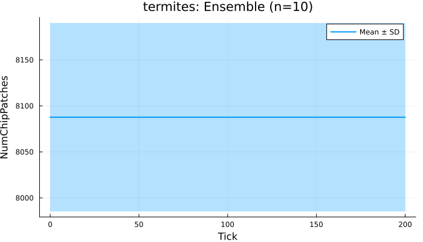
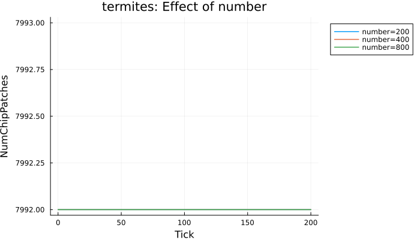

Termites
Overview
WHAT IS IT?
This project is inspired by the behavior of termites gathering wood chips into piles. The termites follow a set of simple rules. Each termite starts wandering randomly. If it bumps into a wood chip, it picks the chip up, and continues to wander randomly. When it bumps into another wood chip, it finds a nearby empty space and puts its wood chip down. With these simple rules, the wood chips eventually end up in a single pile.
THINGS TO NOTICE
As piles of wood chips begin to form, the piles are not “protected” in any way. That is, termites sometimes take chips away from existing piles. That strategy might seem counter-productive. But if the piles were “protected”, you would end up with lots of little piles, not one big one.
The final piles are roughly round. Why is this? What other physical situations also produce round things?
In general, the number of piles decreases with time. Why? Some piles disappear, when termites carry away all of the chips. And there is no way to start a new pile from scratch, since termites always put their wood chips near other wood chips. So the number of piles must decrease over time. (The only way a “new” pile starts is when an existing pile splits into two.)
This project is a good example of a “decentralized” strategy. There is no termite in charge, and no special pre-designated site for the piles. Each termite follows a set of simple rules, but the colony as a whole accomplishes a rather sophisticated task.
THINGS TO TRY
Do the results change if you use just a single termite? What if you use several thousand termites?
When there are just two piles left, which of them is most likely to “win” as the single, final pile? How often does the larger of the two piles win? If one pile has only a single wood chip, and the other pile has the rest of the wood chips, what are the chances that the first pile will win?
EXTENDING THE MODEL
Can you extend the model to have the termites sort several colors of wood?
Plot the number of piles, or their average size, or the number of termites carrying wood chips, as the model runs.
NETLOGO FEATURES
Notice that the wood chips do not exist as objects. They are just represented as colors in the patches. The termites update the patch colors as they pick up and put down the wood chips. In effect, the patches are being used as the data structure. This strategy is useful in many NetLogo programs.
Note than when you stop the GO forever button, the termites keep moving for a little while. This is because they are each finishing the commands in the GO procedure. To do this, they must finish their current cycle of finding a chip, finding a pile, and then finding an empty spot near the pile. In most models, the GO function only moves the model forward one step, but in this model, the GO function is written to advance the turtles through a full cycle of activity. See the “Buttons” section of the Programming Guide in the User Manual for more information on turtle forever buttons.
RELATED MODELS
- Painted Desert Challenge
- Shepherds
- State Machine Example
HOW TO CITE
If you mention this model or the NetLogo software in a publication, we ask that you include the citations below.
For the model itself:
- Wilensky, U. (1997). NetLogo Termites model. http://ccl.northwestern.edu/netlogo/models/Termites. Center for Connected Learning and Computer-Based Modeling, Northwestern University, Evanston, IL.
Please cite the NetLogo software as:
- Wilensky, U. (1999). NetLogo. http://ccl.northwestern.edu/netlogo/. Center for Connected Learning and Computer-Based Modeling, Northwestern University, Evanston, IL.
COPYRIGHT AND LICENSE
Copyright 1997 Uri Wilensky.

This model is licensed under the Creative Commons Attribution-NonCommercial-ShareAlike 3.0 License. To view a copy of this license, visit https://creativecommons.org/licenses/by-nc-sa/3.0/ or send a letter to Creative Commons, 559 Nathan Abbott Way, Stanford, California 94305, USA.
NetLogo itself is free software for non-commercial use under the terms of the GNU General Public License (see full license information here).
To inquire about commercial licenses for either NetLogo or specific models from the models library, please contact netlogo-commercial-admin@ccl.northwestern.edu.
This model was created as part of the project: CONNECTED MATHEMATICS: MAKING SENSE OF COMPLEX PHENOMENA THROUGH BUILDING OBJECT-BASED PARALLEL MODELS (OBPML). The project gratefully acknowledges the support of the National Science Foundation (Applications of Advanced Technologies Program) – grant numbers RED #9552950 and REC #9632612.
This model was developed at the MIT Media Lab using CM StarLogo. See Resnick, M. (1994) “Turtles, Termites and Traffic Jams: Explorations in Massively Parallel Microworlds.” Cambridge, MA: MIT Press. Adapted to StarLogoT, 1997, as part of the Connected Mathematics Project.
This model was converted to NetLogo as part of the projects: PARTICIPATORY SIMULATIONS: NETWORK-BASED DESIGN FOR SYSTEMS LEARNING IN CLASSROOMS and/or INTEGRATED SIMULATION AND MODELING ENVIRONMENT. The project gratefully acknowledges the support of the National Science Foundation (REPP & ROLE programs) – grant numbers REC #9814682 and REC-0126227. Converted from StarLogoT to NetLogo, 2001.
Parameters
| Parameter | Type | Default | Description |
|---|---|---|---|
number | Int | 400 | number of termites |
density | Float64 | 20.0 | percent of patches with wood chips |
grid_width | Int | 201 | -100..100 |
grid_height | Int | 201 | grid height |
max_ticks | Int | 200 | max ticks |
max_steps | Int | 5000 | bound for iterative search loops |
Source Code
The Julia code to run this model:
using ArkModelZoo
_, trajectory = run_termites()Time Series

Ensemble Runs
Ten replicates with different random seeds, showing mean ± standard deviation.

Parameter Sensitivity
Varying number.

Appendix: Source Code
This model is implemented in the Ark.jl Entity-Component-System (ECS) framework. The code is split into five files, each with a distinct role:
- Parameters: a mutable struct holding all configurable values.
- Components: lightweight data types attached to individual entities (agents).
- Resources: world-level shared state accessible to all systems.
- Systems: functions that operate on entities each tick, defining model behavior.
- Model: wiring that assembles the world, registers resources and systems, and provides the run entry point.
Parameters (parameters.jl)
The parameter struct uses @kwdef so that every field has a default value and can be overridden by keyword. These defaults match the original NetLogo model’s slider settings.
Base.@kwdef mutable struct TMParams
number::Int = 400 # number of termites
density::Float64 = 20.0 # percent of patches with wood chips
grid_width::Int = 201 # -100..100
grid_height::Int = 201
max_ticks::Int = 200
max_steps::Int = 5000 # bound for iterative search loops
seed::Int = 42
endComponents (components.jl)
Components are lightweight data types attached to individual entities (agents). Mutable structs hold per-entity state, while empty tag structs act as markers for the ECS query system to efficiently filter entities.
# Continuous position (NetLogo coordinates)
mutable struct TMPosition
x::Float64
y::Float64
end
TMPosition() = TMPosition(0.0, 0.0)
# Heading in degrees (NetLogo convention: 0=north, 90=east, clockwise)
mutable struct TMHeading
angle::Float64
end
TMHeading() = TMHeading(0.0)
# Whether the termite is carrying a wood chip
mutable struct TMCarrying
carrying::Bool
end
TMCarrying() = TMCarrying(false)Resources (resources.jl)
Resources are world-level singletons shared across all systems, used for global state and aggregate statistics.
mutable struct TMGrid
width::Int
height::Int
chips::Matrix{Bool} # true = wood chip present at this patch
end
function TMGrid(width::Int, height::Int)
TMGrid(width, height, fill(false, width, height))
end
function tm_has_chip(grid::TMGrid, gx::Int, gy::Int)
return grid.chips[gx, gy]
end
function tm_place_chip!(grid::TMGrid, gx::Int, gy::Int)
grid.chips[gx, gy] = true
end
function tm_remove_chip!(grid::TMGrid, gx::Int, gy::Int)
grid.chips[gx, gy] = false
end
mutable struct TMStats
num_chip_patches::Int # total chips on ground
num_carrying::Int # termites currently carrying a chip
end
TMStats() = TMStats(0, 0)Systems (systems.jl)
Systems contain the model logic and execute in a defined order each tick. Each system struct implements either initialize! (run once at setup) or update! (run every tick).
# ── Helper: convert continuous position to grid cell (toroidal) ──
function _tm_to_grid(x::Float64, y::Float64, w::Int, h::Int)
gx = mod1(round(Int, x), w)
gy = mod1(round(Int, y), h)
return gx, gy
end
# NetLogo fd: x += sin(heading°) * dist, y += cos(heading°) * dist
function _tm_fd!(pos::TMPosition, heading::Float64, dist::Float64, w::Int, h::Int)
θ = heading * π / 180.0
pos.x += sin(θ) * dist
pos.y += cos(θ) * dist
# Wrap toroidally to [1, width] and [1, height]
half_w = Float64(w) / 2.0
half_h = Float64(h) / 2.0
pos.x = mod(pos.x - 0.5, Float64(w)) + 0.5
pos.y = mod(pos.y - 0.5, Float64(h)) + 0.5
return nothing
end
# NetLogo wiggle: fd 1; rt random 50; lt random 50
function _tm_wiggle!(pos::TMPosition, heading::TMHeading, rng, w::Int, h::Int)
_tm_fd!(pos, heading.angle, 1.0, w, h)
heading.angle = mod(heading.angle + rand(rng, 0:49) - rand(rng, 0:49), 360.0)
return nothing
end
# ── Initialization ──
struct InitTMSystem <: System end
function initialize!(::InitTMSystem, world::World)
params = get_resource(world, TMParams)
rng = get_resource(world, RNGResource).rng
grid = get_resource(world, TMGrid)
# Place chips: each patch has density% chance of a chip
for x in 1:grid.width, y in 1:grid.height
if rand(rng) * 100.0 < params.density
tm_place_chip!(grid, x, y)
end
end
# Create termites at random positions with random headings
for _ in 1:params.number
x = rand(rng) * Float64(params.grid_width) + 0.5
y = rand(rng) * Float64(params.grid_height) + 0.5
heading = Float64(rand(rng, 0:359))
new_entity!(world, (
TMPosition(x, y),
TMHeading(heading),
TMCarrying(false),
))
end
# Compute initial stats
update!(TMStatsSystem(), world)
return nothing
end
# ── Go System: each termite does a full cycle per tick ──
struct TMGoSystem <: System
order::Vector{Int}
end
TMGoSystem() = TMGoSystem(Int[])
function update!(system::TMGoSystem, world::World)
params = get_resource(world, TMParams)
rng = get_resource(world, RNGResource).rng
grid = get_resource(world, TMGrid)
w = grid.width
h = grid.height
max_steps = params.max_steps
# Collect all termites into flat arrays
n = 0
for (eids, _, _, _) in Query(world, (TMPosition, TMHeading, TMCarrying))
n += length(eids)
end
n == 0 && return nothing
all_pos = Vector{TMPosition}(undef, n)
all_head = Vector{TMHeading}(undef, n)
all_carry = Vector{TMCarrying}(undef, n)
idx = 0
for (_, positions, headings, carryings) in Query(world, (TMPosition, TMHeading, TMCarrying))
@inbounds for i in eachindex(positions)
idx += 1
all_pos[idx] = positions[i]
all_head[idx] = headings[i]
all_carry[idx] = carryings[i]
end
end
# Shuffle order (NetLogo ask shuffles each tick)
resize!(system.order, n)
for i in 1:n
system.order[i] = i
end
Random.shuffle!(rng, system.order)
for ord_idx in 1:n
ti = system.order[ord_idx]
pos = all_pos[ti]
head = all_head[ti]
carry = all_carry[ti]
if carry.carrying
# Already carrying from previous tick (shouldn't happen in full-cycle model,
# but handle gracefully): continue find-new-pile → put-down-chip
_tm_find_new_pile!(pos, head, carry, grid, rng, w, h, max_steps)
_tm_put_down_chip!(pos, head, carry, grid, rng, w, h, max_steps)
else
# Full cycle: search-for-chip → find-new-pile → put-down-chip
_tm_search_for_chip!(pos, head, carry, grid, rng, w, h, max_steps)
# Only continue if we picked up a chip
if carry.carrying
_tm_find_new_pile!(pos, head, carry, grid, rng, w, h, max_steps)
_tm_put_down_chip!(pos, head, carry, grid, rng, w, h, max_steps)
end
end
end
return nothing
end
# search-for-chip: wiggle until on a chip patch, pick it up, fd 20
function _tm_search_for_chip!(pos::TMPosition, head::TMHeading, carry::TMCarrying,
grid::TMGrid, rng, w::Int, h::Int, max_steps::Int)
for _ in 1:max_steps
gx, gy = _tm_to_grid(pos.x, pos.y, w, h)
if tm_has_chip(grid, gx, gy)
# Pick up chip
tm_remove_chip!(grid, gx, gy)
carry.carrying = true
# fd 20 to move away from the pile
_tm_fd!(pos, head.angle, 20.0, w, h)
return nothing
end
_tm_wiggle!(pos, head, rng, w, h)
end
return nothing
end
# find-new-pile: wiggle until on a chip patch (don't pick it up)
function _tm_find_new_pile!(pos::TMPosition, head::TMHeading, carry::TMCarrying,
grid::TMGrid, rng, w::Int, h::Int, max_steps::Int)
for _ in 1:max_steps
gx, gy = _tm_to_grid(pos.x, pos.y, w, h)
if tm_has_chip(grid, gx, gy)
return nothing
end
_tm_wiggle!(pos, head, rng, w, h)
end
return nothing
end
# put-down-chip: find an empty adjacent spot, drop chip, get-away
function _tm_put_down_chip!(pos::TMPosition, head::TMHeading, carry::TMCarrying,
grid::TMGrid, rng, w::Int, h::Int, max_steps::Int)
for _ in 1:max_steps
gx, gy = _tm_to_grid(pos.x, pos.y, w, h)
if !tm_has_chip(grid, gx, gy)
# Drop chip here
tm_place_chip!(grid, gx, gy)
carry.carrying = false
# get-away: rt random 360, fd 20, repeat until on empty patch
_tm_get_away!(pos, head, grid, rng, w, h, max_steps)
return nothing
end
# Random turn and step to find empty spot near pile
head.angle = mod(Float64(rand(rng, 0:359)), 360.0)
_tm_fd!(pos, head.angle, 1.0, w, h)
end
return nothing
end
# get-away: rt random 360, fd 20, repeat until on empty (no chip) patch
function _tm_get_away!(pos::TMPosition, head::TMHeading,
grid::TMGrid, rng, w::Int, h::Int, max_steps::Int)
for _ in 1:max_steps
head.angle = mod(Float64(rand(rng, 0:359)), 360.0)
_tm_fd!(pos, head.angle, 20.0, w, h)
gx, gy = _tm_to_grid(pos.x, pos.y, w, h)
if !tm_has_chip(grid, gx, gy)
return nothing
end
end
return nothing
end
# ── Stats System ──
struct TMStatsSystem <: System end
function update!(::TMStatsSystem, world::World)
grid = get_resource(world, TMGrid)
stats = get_resource(world, TMStats)
# Count chip patches on the ground
chip_count = 0
for x in 1:grid.width, y in 1:grid.height
if grid.chips[x, y]
chip_count += 1
end
end
stats.num_chip_patches = chip_count
# Count termites carrying chips
carrying_count = 0
for (_, carryings) in Query(world, (TMCarrying,))
@inbounds for i in eachindex(carryings)
if carryings[i].carrying
carrying_count += 1
end
end
end
stats.num_carrying = carrying_count
return nothing
end
# ── Termination System ──
struct TMTerminationSystem <: System end
function update!(::TMTerminationSystem, world::World)
params = get_resource(world, TMParams)
tick = get_resource(world, Tick)
if tick.tick + 1 >= params.max_ticks
get_resource(world, Terminate).stop = true
end
return nothing
endModel (model.jl)
The model file assembles all pieces: it creates the ECS World with the required component types, registers resources, builds the Scheduler with systems in execution order, and exposes the public run entry point. The observer pattern records the trajectory each tick.
function termites_world(; initial_capacity::Int = 2048)
return World(
TMPosition,
TMHeading,
TMCarrying;
initial_capacity = initial_capacity,
allow_mutable = true,
)
end
function termites_systems()
return (
InitTMSystem(),
TMGoSystem(),
TMStatsSystem(),
TMTerminationSystem(),
)
end
function termites_model(params::TMParams = TMParams())
world = termites_world()
_add_standard_resources!(world, params)
add_resource!(world, TMGrid(params.grid_width, params.grid_height))
add_resource!(world, TMStats())
scheduler = Scheduler(world, termites_systems())
initialize!(scheduler)
return scheduler
end
struct TMObserver end
function termites_headers(::TMObserver)
return ["NumChipPatches", "NumCarrying"]
end
function termites_values(::TMObserver, world::World)
stats = get_resource(world, TMStats)
return Float64[stats.num_chip_patches, stats.num_carrying]
end
function run_termites(; params::TMParams = TMParams(), observe::Bool = true)
return _run_model(termites_model, TMObserver(), termites_values; params, observe)
end